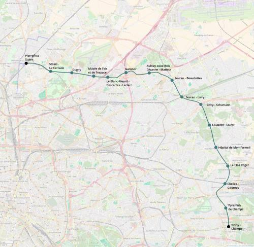

M16 Rocade de Seine-Saint-Denis
M16 Rocade de Seine-Saint-Denis
Noisy-Champs - Pierrefitte-Stains
Création de la ligne 16 du métro.
La ligne 16 est un axe de rocade prévu dans le Grand Paris Express.
Dans le cadre du Plan Ile-de-France et en tenant compte des divers prolongements et créations de lignes un tracé alternatif est proposé qui change la partie ouest de la ligne en placant le terminus à Pierrefitte - Stains plutôt qu'à Saint-Denis - Pleyel
Carte

Cliquer pour agrandir
Stations
Si ce projet vous intéresse n'hésitez pas à le (re-)partagez sur les réseaux sociaux ou par courriel ou à en parler autour de vous.
Si vous souhaitez travailler à la concrétisation de ce projet, passez à l'action et contactez nous.
Commenter